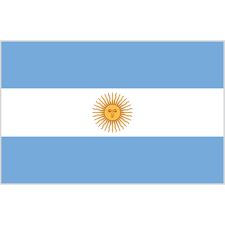
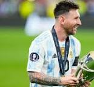

WELLCOME TO MY SPROTS WEBSITE
in Argentina's number 11 jersey.
Maybe we won't see Di Maria again in the World Cup.
Di Maria proved the big match player he is today - a generation will remember you forever.
This is the last World Cup for Angel Di Maria. He has shown extraordinary skill and skill in football.
Messi's team is now in the semi-finals after defeating the Netherlands 4-3 in the quarter-finals in Tribeca. Their opponent now is Croatia. A whole generation is looking up to Di Maria. Best wishes to Di Maria and Argentina.
See you again at the next World Cup


The current generation looks up to Messi,
the king of football
Maybe I will not see the king of football in the World Cup.
Messi proved that he is a big match player today, a generation will remember you forever.
This is Leo Messi's last World Cup.
Messi's team is now in the semi-finals after defeating the Netherlands 4-3 in the quarter-finals in Tribeca. Their opponent now is Croatia. A whole generation is looking at Messi. Good wishes to Messi and Argentina.
See you again at the next World Cup
« Previous
Next »
‹
›
Maybe we won't see Di Maria again in the World Cup. Di Maria proved the big match player he is today - a generation will remember you forever. This is the last World Cup for Angel Di Maria. He has shown extraordinary skill and skill in football. Messi's team is now in the semi-finals after defeating the Netherlands 4-3 in the quarter-finals in Tribeca. Their opponent now is Croatia. A whole generation is looking up to Di Maria. Best wishes to Di Maria and Argentina. See you again at the next World Cup
The current generation looks up to Messi,
the king of football
Maybe I will not see the king of football in the World Cup. Messi proved that he is a big match player today, a generation will remember you forever. This is Leo Messi's last World Cup. Messi's team is now in the semi-finals after defeating the Netherlands 4-3 in the quarter-finals in Tribeca. Their opponent now is Croatia. A whole generation is looking at Messi. Good wishes to Messi and Argentina. See you again at the next World Cup
« Previous Next » ‹ ›